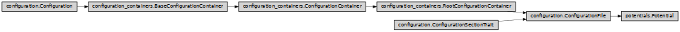

Potential
- class ase2sprkkr.potentials.potentials.Potential(atoms=None, definition=None)[source]
It holds data form SPR-KKR potential file
It, in addition to being a containers for their sections, can read/write its properties from/to an ASE atoms object.
Class hierarchy
Constructor
- __init__(atoms=None, definition=None)[source]
Create the container and its members, according to the definition
- read_from_file(file, atoms=None, allow_dangerous=False)[source]
Read data from a file
- Parameters
file (str or file) – File to read the data from
clear_first – Clear the container first. Otherwise, the data in the sections that are not present in the file are preserved.
allow_dangerous – Allow to load dangerous_values, i.e. the values that do not pass the requirements for the input values (e.g. of a different type or constraint-violating)
- make_complete()[source]
Call this function, if you set manually all the properties necessary to create the atoms object
- property atoms
- update_atoms(atoms=None)[source]
Update the ASE object from the values contained in the sections of the potential
- set_from_atoms(atoms=None, io_data=None)[source]
Set the sections’ values of the potential according to the given ASE atoms object.
- Parameters
atoms – The atoms object, from which the data will be set. If it is None, the
atomsproperty of the potential (self.atoms) is used.io_data (WriteIoData) – The additional (in the time of the creation frozen) state of the atoms object, that contains e.g. numbering of the sites, atomic types etc. If is not set, it is created from the atoms.
- potential_definition = <POTENTIAL FILE PotentialDefinition>
- static from_file(filename, atoms=None, allow_dangerous=False)[source]
Create a potential from a given potential file.